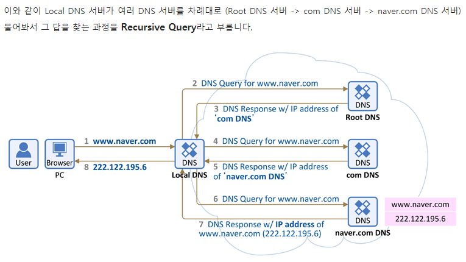

-godaddy 에서 도메인 구매
godaddy, cafe24, wix, amazon등 여러 DNS 호스팅 업체가 존재합니다.
여기선 DNS를 관리하며 저장된 도메인에 따라 우리가 작업했던(유동적인 IP가 존재하는, URL이 존재하는) 웹 페이지로 연결을 해주는 것 같습니다.(redirecting?)
사용자 : gabeujin.space 열기 >
컴퓨터가 DNS서버에게(로컬에 존재하지 않기 때문에 서버를 돌면서 gabeujin에 해당하는 찾습니다. 우리는 godady에서 githubPage의 a레코드를 입력하였기 때문에 로드해옵니다.)
물어봄
: gabeujin.space의 ip가 뭐냐?(DNS서버는 각 회사마다 다르다) >
위 Domain과 같은 ip를 찾게되어 해당 아이피를 사용자에게 알려줌 > 사용자는 해당 도메인이 어느 ip에 해당하는 지 표면적으로는 모르지만 백그라운드에선 이미 도메인과 ip를 같이
실어서
해당사이트로 간다. 그리고 해당사이트는 페이지 응답요청에 따라 사용자에게 페이지를 응답해준다.
아래처럼 위 과정을 통칭 "Recursive Query"라고 한다.

-Github Page 사용법 익히기
먼저 깃허브에 들어갑니다.
깃허브 회원가입은 메인 페이지에서 바로 가입을 진행할 수 있으니 바로 진행합니다.

첫번째 input값은 닉네임을 입력하고,
두번째는 본인이 로그인을 할 때 입력할 ID 역할을 할 이메일을 작성하고,
마지막은 암호를 작성해서 가입을 해줍니다.
(다음 페이지에서 그냥 create 만 누르면 됩니다)

계정이 만들어졌습니다.
무료와 유료 중 선택을 하라고 하는데, 결제 정보는 언제든지 변경할 수 있으니 무료를 선택합니다.(모든 저장소가 공개됩니다.private는 추가 결제 필요)
위의 github student developer Pack을 클릭하게 되면 개발에 앞서 필요한 여러 사이트와 app을 알아 볼 수 있습니다.
들어가서 내가 필요한 게 있나, 개발을 할 땐 어떤게 필요하나에 대해 한번쯤 확인해서 나쁠 건 없다고 생각하니 들어가보시는 걸 추천드립니다.
아래의 체크박스는

첫번째 : 기업과 개인을 구분 짓는 체크박스
두번째 : 정기적인 깃허브 뉴스피드, 이벤트 등을 허용하겠다는 체크박스
메일은 받아보셔도 나쁘지 않습니다! 원하는 체크박스를 체크하고 continue를 눌러줍니다.

-
본인의 레벨
-
경험이 많다
-
약간의 경험도
-
완전히 프로그래밍 초짜다
-
깃허브 사용계획(중복가능)
-
개발
-
디자인
-
연구
-
학교 프로젝트
-
프로젝트 관리
-
기타 등등(명시바람)
-
자신은 어디에 가깝다고 설명할 수 있나?
-
취미로
-
학생
-
전문가
-
기타 등등(명시바람)
-
흥미있는 분야
-
자유롭게 작성
위 체크박스 과정은 스킵할 수 있습니다!
위 과정을 진행하고 submit!

마지막으로 본인이 입력했던 이메일에 대한 인증이 필요합니다. id로 입력했던 이메일로 들어가서 가입을 마무리 해줍니다.


verify email address 를 클릭해줍니다.

모든 가입절차가 끝났습니다!
다음챕터에선 githubpage로 페이지를 만드는 법을 소개하겠습니다.
Next
story to preview
-github page를 만들어 무료로 개인 홈페이지 만들기
github Page 란?
github 계정의 특수한 네이밍으로 지정된 repository를 나만의 web 서버(깃허브에 속한 나의 위치? 정도)의 root directory로 만들어 실제 웹서비스가 운영되도록 도와주는
github 서비스.
단, 동적인 언어 : php,jsp 등은 정적 사이트로 정의된 githubPage에서 사용이 불가능합니다.
위 홈페이지의 영상을 보시면 간단하게 이해할 수 있습니다.
.
.
.